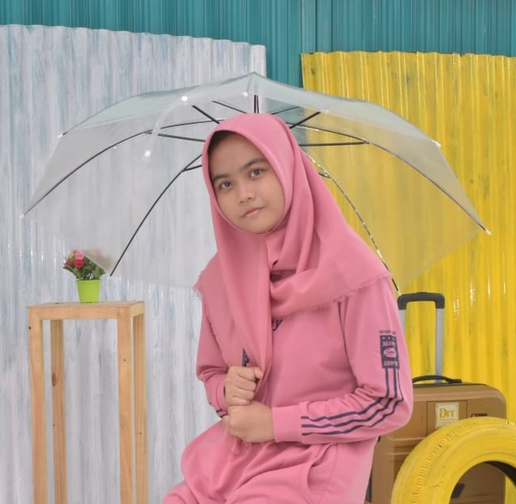

Tentang Saya

Saya Nayya Alta Namira lulusan SMK Pelita Ciampea 2 dengan pengalaman PKL selama 4 bulan di bidang administrasi di Departemen Agronomi dan Hortikultura IPB University. Selama PKL, saya menjalankan tugas seperti entri data, pengarsipan, pengecekan dokumen, serta pengiriman surat melalui e-Office. Saya selalu berusaha menyelesaikan setiap pekerjaan dengan sungguh-sungguh dan tepat waktu. Saya percaya bahwa rasa tanggung jawab, kemauan untuk belajar, dan konsistensi adalah kunci untuk berkembang. Meskipun masih di awal perjalanan karier, saya siap bekerja keras dan terus memperbaiki diri melalui setiap pengalaman yang saya dapatkan.
Pendidikan
- SMP Negeri 1 Dramaga
Juli 2019 - Mei 2022 - SMK Pelita Ciampea 2 - Teknik Jaringan Komputer dan Telekomunikasi
Juli 2022 - Maret 2025
Pengalaman
Peserta PKL - Departemen Agronomi dan Hortikultura, IPB University (November 2023 - Maret 2024)
- Melakukan pemindaian dan fotokopi dokumen resmi.
- Mengecap tanda tangan pada skripsi yang telah ditandatangani oleh Ketua Departemen.
- Menginput data terkait skripsi, proposal penelitian, dan hasil penelitian akhir.
- Menyusun arsip aktif dan tidak aktif berdasarkan klasifikasi.
- Menata dan menyortir skripsi sebelum dipindahkan ke ruang penyimpanan akhir.
- Memverifikasi data skripsi dengan mencocokkannya pada dokumen asli.
- Menata kabel dan menjaga kerapihan di area kantor Dekanat.
- Mengirim surat melalui sistem e-Office IPB ke mahasiswa, dosen, departemen, dan fakultas.
- Membuat draft surat resmi administrasi.
- Mengelola absensi pegawai secara manual dan digital.
- Memindahkan arsip antara perpustakaan dan ruang penyimpanan.
- Membantu menyusun dan merapikan dokumen administrasi sesuai permintaan.
Skill
- Microsoft Word
- Bekerja dalam tim
- Entri data
- Pengarsipan